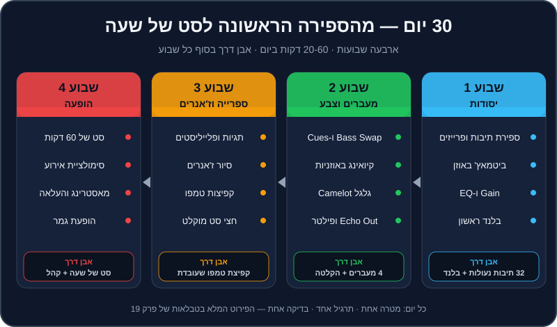

פרק 19 מתוך 20
תוכנית 30 יום
30-Day Practice Plan
חודש אחד, יום אחר יום: 30 אימונים של 20 עד 60 דקות עם מטרה, תרגיל, קבצים מהרפו ונקודת בדיקה — מספירת תיבות ועד סט של שעה מוקלט והופעה ראשונה. כולל אבני דרך שבועיות ורשימת הערכה עצמית.
קראתם פרקים, הבנתם עקרונות, אולי אפילו ניסיתם כמה מעברים. עכשיו מגיע החלק שמפריד בין מי ש"יודע איך עושים" לבין מי שעושה: תרגול קבוע. DJing היא מיומנות של ידיים ואוזניים, והן לומדות מחזרות — לא מקריאה.
התוכנית הזו לוקחת את כל המדריך והופכת אותו לחודש אחד מובנה. כל יום יש מטרה אחת, תרגיל אחד, קבצים מדויקים מהרפו, ומבחן קטן שאומר לכם אם הצלחתם. בסוף החודש — סט של שעה, מוקלט, ונגינה ראשונה מול אנשים.
מה תלמדו בפרק#
- איך לתרגל נכון: קצר, ממוקד, כל יום.
- תוכנית של 30 ימים, עם קבצים ובדיקה לכל יום.
- אבני דרך שבועיות.
- רשימת הערכה עצמית לסוף החודש.

לפני שמתחילים#
איך לתרגל נכון#
- כל יום, גם אם קצר. 25 דקות כל יום עדיפות על 3 שעות פעם בשבוע. המוח מקבע מיומנויות בזמן השינה בין האימונים.
- מטרה אחת לאימון. לא "לנגן קצת" — אלא "20 החלפות באס על ה-1".
- חימום של 5 דקות — ביטמאץ' של שני לופי תופים (
practice-03), לפני כל אימון. - מדדו. כל יום יש "בדיקה". רשמו ביומן: הצלחתי / חלקית / לא, ומשפט אחד.
- ווליום שפוי ופלאגים (ראו פרק 17).
- פספסתם יום? לא נורא. ממשיכים מהיום שבו עצרתם — לא "משלימים" שני ימים ביחד.
- יום שלא הצליח? חזרו עליו מחר. התוכנית היא 30 אימונים, לא בהכרח 30 ימים ברצף.
מקרא קבצים#
practice-NN— קובצי תרגול בתיקייהmusic/practice/(למשלmusic/practice/practice-03-drums-124.mp3).transition-NN— דמואים של מעברים בתיקייהmusic/transitions/.house-05,techno-08,mainstream-15… — טראקים בתיקייהmusic/tracks/<ז'אנר>/(למשלmusic/tracks/tech_house/house-05-groove-machine.mp3). כל הנתונים של כל טראק — בקובץ ה-.jsonשלידו.
שבוע 1 — יסודות: אוזן, תוכנה, קצב#
| יום | מטרה | תרגיל | קבצים | זמן | בדיקה |
|---|---|---|---|---|---|
| 1 | ספרייה מוכנה | ייבוא DJ Lab ל-Rekordbox, ניתוח, הוספת עמודות BPM, Key (במצב Alphanumeric) ו-Comments (פרקים 2, 9) |
music/rekordbox/, music/tracks/ |
40 | רואים את כל הטראקים עם BPM, קוד Camelot ו-Hot Cues A-H |
| 2 | לספור תיבות ופרייזים | ספירה בקול 1-2-3-4, סימון תיבה 1 של כל פרייז (פרק 3) | practice-01 |
20 | בעיניים עצומות, מנחשים מתי יבוא הקראש הבא — 4 מתוך 5 |
| 3 | להבין מבנה טראק | מעבר על כל ה-Hot Cues וה-sections בקובץ ה-JSON; לזהות אינטרו, ברייקדאון, דרופ, אאוטרו |
house-05 |
30 | מצביעים על כל קטע לפני שהוא מתחיל |
| 4 | ביטמאץ' באוזן 1 | אותו לופ בשני דקים, Sync כבוי, תיקון עם ה-Jog וה-Tempo (פרק 4) |
practice-03 |
30 | 32 תיבות בלי "דהרה" |
| 5 | ביטמאץ' באוזן 2 | להביא 120 ל-128 ולהפך; טמפו "עקום" 125.5 מול 124 | practice-02, practice-04, practice-06, practice-03 |
40 | התאמה תוך 30 שניות, 3 פעמים ברצף |
| 6 | Gain ו-EQ | אימון אוזן לתחומי תדר; כיוון Trim לפי המטרים (פרק 5) | practice-14 |
30 | 8 מתוך 10 ניחושים נכונים; אף ערוץ לא באדום |
| 7 | הבלנד הראשון | האזנה ל-transition-01 ושחזור שלו (פרק 6) |
transition-01, house-01, house-02 |
45 | מעבר שלם בלי רגע של "שני באסים" |
🏁 אבן דרך שבוע 1: ביטמאץ' באוזן שמחזיק 32 תיבות, ובלנד ארוך אחד נקי ומוקלט (גם בטלפון זה בסדר).
שבוע 2 — מעברים, קיואינג, הרמוניה ואפקטים#
| יום | מטרה | תרגיל | קבצים | זמן | בדיקה |
|---|---|---|---|---|---|
| 8 | Bass Swap | 20 החלפות באס על ה-1, ואז שחזור transition-02 |
practice-08, practice-09, house-05, house-06 |
40 | 20 החלפות בלי "חור" ובלי "כפול" |
| 9 | Hot Cues ולופים | ציד Hot Cues בתיבות 1, 17, 33, 49, 65; לופ של 4 תיבות ויציאה ממנו על ה-1 (פרק 7) | practice-13 |
30 | 5 Hot Cues מדויקים לגריד |
| 10 | קיואינג | ביטמאץ' באוזניות בלבד, עם Cue/Master Mix (פרק 8) | practice-07, practice-03 |
30 | המעבר נשמע נכון ברמקולים כבר ברגע שמעלים את הפיידר |
| 11 | לשמוע הרמוניה | 8A+9A מול 8A+3A, בעיניים עצומות (פרק 10) | practice-10, practice-11, practice-12 |
30 | מזהים "התנגשות" 8 מתוך 10 |
| 12 | מהלכים בגלגל | +1: house-05 → house-08 · +2: techno-08 → techno-05 · A↔B: mainstream-04 → mainstream-03 | הטראקים שבתרגיל | 45 | שלושה מעברים מוקלטים, ובכל אחד אתם יודעים להגיד איזה מהלך זה |
| 13 | אפקטים 1 | סיור Beat FX; Echo Out בין שני לופים בטמפו שונה (פרק 11) | practice-03, practice-04 |
40 | Echo Out נוחת על ה-1 — 10 פעמים |
| 14 | אפקטים 2 + הקלטה | שחזור מעבר פילטר ו-Loop Roll; הקלטת מיקס של 10 דקות (פרק 16) | transition-03, transition-06, techno-05, techno-08, techno-02, techno-03 |
60 | הקלטה של 10 דקות בלי אדום במטרים |
🏁 אבן דרך שבוע 2: ארבעה סוגי מעברים (בלנד, Bass Swap, Echo Out, פילטר), הבנה של גלגל Camelot, והקלטה ראשונה שאתם מקשיבים לה עד הסוף.
שבוע 3 — ספרייה, ז'אנרים, טמפו וסט#
| יום | מטרה | תרגיל | קבצים | זמן | בדיקה |
|---|---|---|---|---|---|
| 15 | ספרייה של DJ | My Tag לתפקיד ולאנרגיה, פלייליסטים "חימום / בנייה / שיא / סגירה", Intelligent Playlist אחד (פרק 12) |
music/tracklist.plan.json |
40 | 4 פלייליסטים מוכנים, כל טראק מתויג |
| 16 | משפחת ההאוס | house-12 → house-01 (A↔B); house-04 → house-11 (ליירים); house-07 → house-06 → house-05 → house-08 (+1 שלוש פעמים) (פרק 13) | הטראקים שבתרגיל | 45 | כל מעבר בסגנון ה"אופייני" של הז'אנר |
| 17 | משפחת הטכנו | techno-08 → techno-05 → techno-06 → techno-07 (כניסה בברייקדאון); techno-10 מתחת ל-techno-09, 64 תיבות | הטראקים שבתרגיל | 45 | ליירים של 64 תיבות בלי "בוץ" בנמוכים |
| 18 | מיינסטרים ו-Open Format | mainstream-09 → mainstream-08 (קאט); mainstream-13 → mainstream-14 (transition-09); mainstream-01 → mainstream-02 (transition-05) |
הטראקים שבתרגיל | 45 | קאטים על ה-1, בלי שנייה של שקט |
| 19 | קפיצת טמפו | שחזור transition-08; ואז מ-practice-15 אל mainstream-15 (פרק 15) |
transition-08, mainstream-08, mainstream-15, practice-15 |
40 | מ-95 ל-124 בלי "בור" — 3 פעמים ברצף |
| 20 | סולם ז'אנרים וחצי טמפו | 6 המדרגות מ-mainstream-08 עד house-03; mainstream-06 ↔ breadth-07 | הטראקים שבתרגיל | 45 | 6 מדרגות מוקלטות; טראפ ודאבסטפ "נעולים" |
| 21 | הסט, חלק א' | טראקים 1-8 של הסט לדוגמה, עם הוראות המעבר (פרק 12) | פלייליסט "DJ Lab — 60 Min Journey" | 60 | 32 דקות מוקלטות בלי עצירה |
🏁 אבן דרך שבוע 3: ספרייה מאורגנת לפי תפקיד ואנרגיה, מעבר טמפו גדול שעובד, וחצי סט מוקלט.
שבוע 4 — הופעה#
| יום | מטרה | תרגיל | קבצים | זמן | בדיקה |
|---|---|---|---|---|---|
| 22 | הסט, חלק ב' | טראקים 8-15, כולל רמפות הטמפו וה-Echo Out של הסגירה | אותו פלייליסט | 60 | 32 דקות מוקלטות בלי עצירה |
| 23 | ריצה מלאה | הסט כולו, 60 דקות, מוקלט — כמו הופעה: בלי לעצור, בלי להתחיל מחדש | אותו פלייליסט | 60 | שעה שלמה, רציפה |
| 24 | ביקורת ותיקון | האזנה להקלטה של אתמול; בחירת 3 המעברים החלשים ותרגול של כל אחד 5 פעמים | ההקלטה שלכם | 45 | 3 המעברים נשמעים טוב יותר בהקלטה חוזרת |
| 25 | סימולציית אירוע | "סבב ראשון" של 15 דקות בסגנון Open Format, עם הכרזה ו"שבירת כוס" (פרק 14) | house-02, mainstream-13 עד mainstream-16 |
45 | מעבר "שבירת כוס" בפחות משנייה; הכרזה ברורה |
| 26 | מאסטרינג והעלאה | חיתוך, פייד, נרמול, לימיטר, Tracklist; העלאה פרטית (פרק 16) | ההקלטה של יום 23 | 45 | קובץ MP3 של 320 עם Tracklist, מועלה כפרטי |
| 27 | קריאת קהל | חבר/ה מרימים "כרטיסי קהל" (משועממים / בשיא / יוצאים לבר); אתם בוחרים דלת למעלה/ישר/למטה | כל הספרייה | 40 | תגובה נכונה ל-5 כרטיסים ברצף |
| 28 | תקלות ואוזניים | תרגיל תקלה מפתיע; 20 דקות סט עם פלאגים (פרק 17) | כל הספרייה | 30 | מוזיקה חוזרת תוך 10 שניות |
| 29 | פרומו | ביוגרפיה של 150 מילה, רילס של 30 שניות ממעבר (CC0!), טיוטת EPK (פרק 18) | ההקלטות שלכם | 45 | חבר קורא את הביו ומתאר אתכם במשפט — והוא צודק |
| 30 | הופעת גמר | 45-60 דקות מול חברים או משפחה (או בשידור חי), מוקלט; מילוי רשימת ההערכה העצמית | הכול | 60 | סיימתם סט מול אנשים. 🎉 |
🏁 אבן דרך שבוע 4: סט שלם של שעה, מוקלט ומאוסטר, והופעה ראשונה מול קהל — גם אם הקהל הוא שלושה חברים בסלון.
רשימת הערכה עצמית#
בסוף החודש, סמנו כל שורה: ✅ בטוח · 🟡 לפעמים · ❌ עדיין לא. כל ❌ ו-🟡 הוא האימון של החודש הבא.
טכני#
- [ ] מתאים טמפו באוזן, בלי Sync, תוך 30 שניות.
- [ ] שומר על ביטמאץ' 32 תיבות ומתקן "דהרה" עם ה-Jog.
- [ ] סופר פרייזים ונכנס עם טראק חדש על ה-1 של פרייז.
- [ ] מבצע Bass Swap בלי רגע של שני באסים או אף באס.
- [ ] משתמש ב-Hot Cues ובלופים בלי להסתכל יותר מדי על המסך.
- [ ] שומר על מטרים מחוץ לאדום לאורך סט שלם.
- [ ] מבצע Echo Out שנוחת בדיוק על ה-1.
מוזיקלי#
- [ ] קורא גלגל Camelot ויודע מה המהלכים הבטוחים מכל סולם.
- [ ] שומע התנגשות סולמות ויודע לחלץ ממנה.
- [ ] מזהה את רוב 24 הז'אנרים ויודע בערך את טווח ה-BPM שלהם.
- [ ] עובר בין טמפואים רחוקים (מ-95 ל-124) בלי "בור".
- [ ] בונה סט עם עקומת אנרגיה בגלים — חימום, בנייה, שיא, סגירה.
- [ ] יודע בכל רגע שלוש "דלתות" לשיר הבא.
הופעה ומקצוע#
- [ ] מקליט, מאזין, ומוצא 3 דברים לשפר.
- [ ] מנגן עם פלאגים, וווליום המוניטור והאוזניות סביר.
- [ ] מחזיר מוזיקה לרחבה תוך 10 שניות מתקלה.
- [ ] מרים את הראש מהמסך לפחות חצי מהזמן.
- [ ] יודע מה עושים בכל שלב של ערב חתונה.
- [ ] יש לי מיקס של 30-60 דקות שאני גאה לשלוח.
- [ ] יש לי ביוגרפיה קצרה וטיוטת EPK.
ומה אחרי 30 הימים?#
- חזרו על התוכנית עם הספרייה שלכם (מהארגזים ב-
crates/ומקניות חוקיות) במקום הטראקים של הרפו. - סט חדש כל שבועיים — בכל פעם ז'אנר או אירוע אחר: חימום לבר, סט טכנו, סבב ים-תיכוני.
- הופעה קטנה כל חודש — מסיבה של חברים, Open Decks, שידור חי.
- חזרו לפרקים שבהם הרגשתם הכי פחות בטוחים. עכשיו הם ייקראו אחרת.
סיכום#
- תרגול קבוע, קצר וממוקד — עם מטרה ובדיקה לכל אימון.
- שבוע 1: אוזן וקצב. שבוע 2: מעברים, הרמוניה ואפקטים. שבוע 3: ספרייה, ז'אנרים, טמפו וסט. שבוע 4: הופעה.
- בסוף החודש — סט של שעה מוקלט, והופעה ראשונה.
- רשימת ההערכה העצמית היא תוכנית האימונים של החודש הבא.
זה הפרק האחרון של המדריך — אבל לא הסוף. נתקלתם במונח לא מוכר? הוא מחכה לכם במילון המונחים. משהו לא עובד? בשאלות הנפוצות יש פתרונות לתקלות הכי נפוצות. ובהצלחה בהופעה הראשונה! 🎧